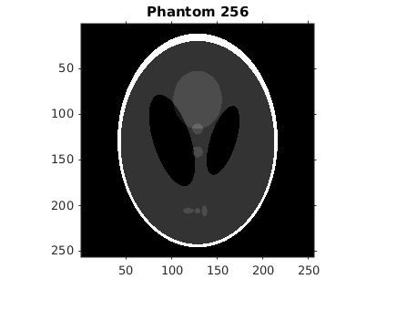
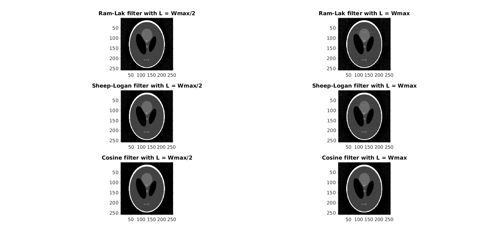
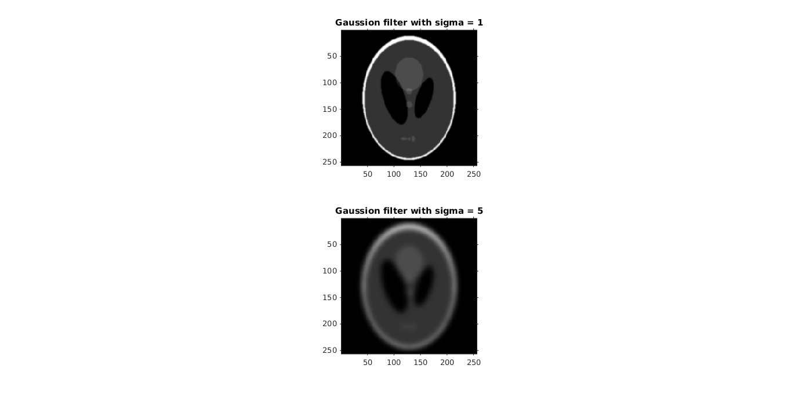
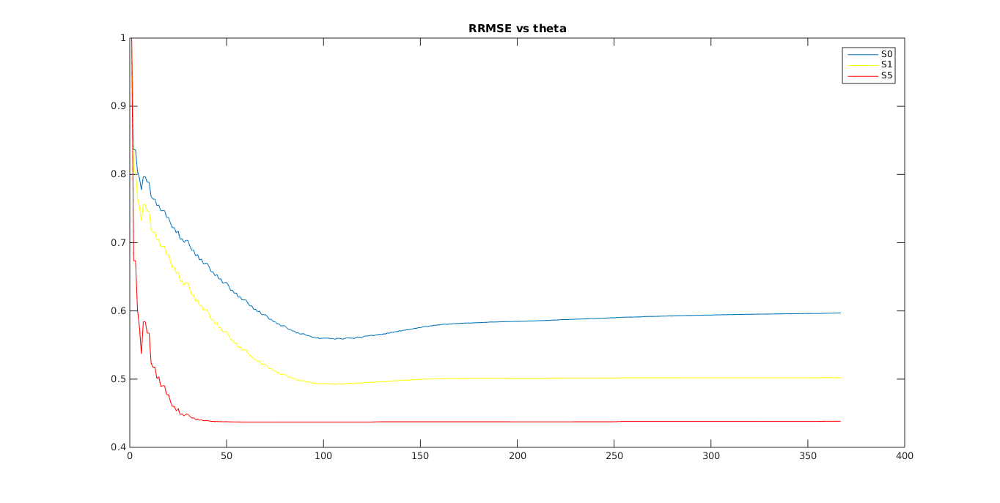

Contents
clc; clear; close all; %%Part 1 - Frequency Filtering f = phantom(256); h = figure imshow(f) title('Phantom 256') theta = 0:3:177; radonTransformedPhantom = radon(f,theta); %Filter IDs for the image filters in f-domain % 1 - Ram-Lak % 2 - Sheep-Logan % 3 - Cosine
1 - Ram-Lak
filteredImage = myFilter(radonTransformedPhantom, 0.5,1); backprojImage_0_5_1 = myBackproj(filteredImage,theta); filteredImage = myFilter(radonTransformedPhantom, 1,1); backprojImage_1_1 = myBackproj(filteredImage,theta);
2 - Sheep-Logan
filteredImage = myFilter(radonTransformedPhantom, 0.5,2); backprojImage_0_5_2 = myBackproj(filteredImage,theta); filteredImage = myFilter(radonTransformedPhantom, 1,2); backprojImage_1_2 = myBackproj(filteredImage,theta);
3 - Cosine
filteredImage = myFilter(radonTransformedPhantom, 0.5,3); backprojImage_0_5_3 = myBackproj(filteredImage,theta); filteredImage = myFilter(radonTransformedPhantom, 1,3); backprojImage_1_3 = myBackproj(filteredImage,theta); figure('units','normalized','outerposition',[0 0 1 1]) subplot(3,2,1) imshow(backprojImage_0_5_1) title('Ram-Lak filter with L = Wmax/2') subplot(3,2,2) imshow(backprojImage_1_1) title('Ram-Lak filter with L = Wmax') subplot(3,2,3) imshow(backprojImage_0_5_2) title('Sheep-Logan filter with L = Wmax/2') subplot(3,2,4) imshow(backprojImage_1_2) title('Sheep-Logan filter with L = Wmax') subplot(3,2,5) imshow(backprojImage_0_5_3) title('Cosine filter with L = Wmax/2') subplot(3,2,6) imshow(backprojImage_1_3) title('Cosine filter with L = Wmax') 
Similarities and Differences in Images with Different Parameters
As we can see almost all images with Cutoff = w/2 work the best as they have no higher frequencies (f > w/2) which generally lead to higher noise in the images. Among Ram-Lak, Shep-Logan and Cosing the best reconstruction can be seen for Cosine filter as the filter spectrum plot gives least weightage to higher frequencies , hence whilst extracting information from the higher freqs it also avoids the amplification of the noise from them.
Part 2 - Backprojection of Smoothened Transforms
mask = fspecial ('gaussian', 11, 1); f1 = conv2 (f, mask, 'same'); mask = fspecial ('gaussian', 51, 5); f5 = conv2 (f, mask, 'same'); figure('units','normalized','outerposition',[0 0 1 1]) subplot(2,1,1) imshow(f1) title('Gaussion filter with sigma = 1') subplot(2,1,2) imshow(f5) title('Gaussion filter with sigma = 5') clc radonTransformedPhantom_0 = radon(f,theta); radonTransformedPhantom_1 = radon(f1,theta); radonTransformedPhantom_5 = radon(f5,theta); filteredImage0 = myFilter(radonTransformedPhantom_0, 1,1); backprojImage0 = myBackproj(filteredImage0,theta); filteredImage1 = myFilter(radonTransformedPhantom_1, 1,1); backprojImage1 = myBackproj(filteredImage1,theta); filteredImage5 = myFilter(radonTransformedPhantom_5, 1,1); backprojImage5 = myBackproj(filteredImage5,theta); figure('units','normalized','outerposition',[0 0 1 1]) subplot(3,1,1) imshow(backprojImage0) title('Backproj Image| sigma = 0') subplot(3,1,2) imshow(backprojImage1) title('Backproj Image| sigma = 1') subplot(3,1,3) imshow(backprojImage5) title('Backproj Image| sigma = 5') disp(strcat(['RRMSE with sigma = 0 ' ,num2str(myRRMSE(f ,backprojImage0))])) disp(strcat(['RRMSE with sigma = 1 ' ,num2str(myRRMSE(f1,backprojImage1))])) disp(strcat(['RRMSE with sigma = 5 ' ,num2str(myRRMSE(f5,backprojImage5))]))
RRMSE with sigma = 0 0.59715 RRMSE with sigma = 1 0.50217 RRMSE with sigma = 5 0.43821

Explananation for Least RRMSE
As can be seen in the above images the blurring with max sigma has the least error because when we make theta discrete errors jumps into the transform and this error is smoothen ( partly avoided with a higher blurring rate). Hence the image S5 has the least RRMSE error.
Part 3 RRMSE vs W
N = size(radonTransformedPhantom,1); RRMSE0_history = zeros(N,1); RRMSE1_history = zeros(N,1); RRMSE5_history = zeros(N,1); for i = 1:N filteredImage0 = myFilter(radonTransformedPhantom_0, i/N,1); backprojImage0 = myBackproj(filteredImage0,theta); filteredImage1 = myFilter(radonTransformedPhantom_1, i/N,1); backprojImage1 = myBackproj(filteredImage1,theta); filteredImage5 = myFilter(radonTransformedPhantom_5, i/N,1); backprojImage5 = myBackproj(filteredImage5,theta); RRMSE0_history(i) = myRRMSE(f,backprojImage0); RRMSE1_history(i) = myRRMSE(f1,backprojImage1); RRMSE5_history(i) = myRRMSE(f5,backprojImage5); end figure('units','normalized','outerposition',[0 0 1 1]) plot(RRMSE0_history) hold on plot(RRMSE1_history,'y') plot(RRMSE5_history,'r') title('RRMSE vs theta') legend('S0','S1','S5')
Explananation for RRMSE vs W
As we can see the RRMSE is maximum for w = 1. This can be concluded from the fact that for w = 1 there is virtually no filtering we loose vital low freq imformation and hence all freq components are 0. Later on with increasing w the error increases as it gets amplified for larger frequencies.